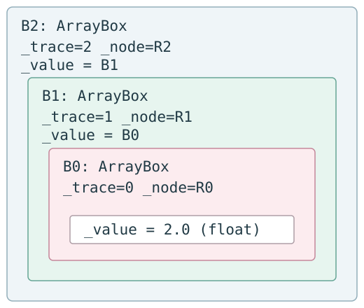

Autograd 源码学习（十）：高阶自动微分与 Nested Tracing
求完一阶导数后，Autograd 执行过的是一段由 VJP operations 组成的程序。若这段程序本身还能被追踪，就可以继续对它求导。
我们沿已有的三阶实验观察 grad(grad(grad(f)))：调用栈依次建立 trace 0、1、2，原函数却从最外壳看到 2、1、0。理解这两种顺序，就能说明为什么 primitive 只能先解开最高 trace。
源码基线：HIPS/autograd 1.9.1，commit f53a21734fdfae636f448744d9097d8d35a643a0。
本文目标
grad(grad(f))为什么仍可被 trace？- nested Box 与
TraceStack如何协作？ - custom VJP 为什么必须使用可微操作才能支持高阶导数？
Mental Model
第一次求导产生的不是静态数字公式，而是一段执行 VJP operations 的 Python 程序。当外层 grad 对这段程序再求导时，内层 forward input 与 backward 中的计算仍可能是 Box，于是同一 tracing machinery 再记录一层。
必要的数学
Level 1 只是这些导数；Level 2 是“对 derivative program 再应用 AD”；Level 3 才是 nested ArrayBox 与多个 integer trace ids。
一个最小例子
[EXPERIMENT]
File: experiments/higher_order.py
Purpose: 在同一个 x=2 点验证一到三阶导数，并记录原函数入口的 Box 层数。
这三行是独立求值，结果分别为12、12、6。实验的原函数在执行 return x**3 前调用 describe_box_layers(x)，所以记录的是到达原 f 时的输入状态，而不是退出全部求导之后的返回值。
第三阶求导调用原 f 时，最外层可观察到一个 trace 2 Box，其 _value 是 trace 1 Box，再包着 trace 0 Box，最后才是普通 2.0。
对应的 Autograd 源码
| File / symbol | 谁调用 | 它调用谁 | 输入 -> 输出 | AD 角色 |
|---|---|---|---|---|
tracer.py :: TraceStack |
every trace |
new trace context | nested calls -> increasing ids | 区分嵌套层 |
tracer.py :: find_top_boxed_args |
primitive wrapper | 检查 each arg type/trace | possibly nested boxes -> highest trace boxes | 决定当前 operation 属于哪层 |
tracer.py :: getval |
notrace/helpers | recursively unwrap | nested Box -> base value | 需要时完全取值 |
core.py :: make_vjp/backward_pass |
every grad layer | traced VJP operations | Box 或数值 -> Box 或 gradient | derivative program |
numpy_vjps.py rules |
VJPNode closures |
autograd.numpy operations |
upstream Box/value -> ingrad | 让 backward 本身可微 |
调用时序
大版对象图见 nested traces；本文下文仍完整嵌入关键图和状态表，无需跳转才能理解主线。
outer grad, trace 0
-> calls middle grad, trace 1
-> calls inner grad, trace 2
-> f receives Box(trace2, value=Box(trace1, value=Box(trace0,...)))
-> highest trace owns each immediate node
-> VJP calculations still see lower-layer Boxes
-> outer backward differentiates those calculations
源码 walkthrough
先区分求导包装顺序与实际执行顺序
grad(grad(grad(f))) 的最外层包装器首先接到用户的 2.0，因此它先开 trace 0；它要对中间的 gradient 程序求导，于是执行中层 grad，开 trace 1；中层再执行最内层 grad，开 trace 2，最后才到 f。trace id 大不表示最终输出的是更高阶结果，而表示当前调用栈中更深的一次 tracing。
[REAL SOURCE]
File: autograd/tracer.py
Symbol: TraceStack
Commit: f53a21734fdfae636f448744d9097d8d35a643a0
class TraceStack:
def __init__(self):
self.top = -1
@contextmanager
def new_trace(self):
self.top += 1
yield self.top
self.top -= 1
进入第一层前 top=-1；三次 context 进入后依次为0、1、2。正常结束 trace 2 的 forward 时恢复为1，而不是立即结束所有外层 tracing；因此内层 VJP 执行期间仍有较低 trace 活跃。这里讨论正常路径，没有把原文改写为带 finally 的另一版实现。
Box._value 可以是另一个 Box
[REAL SOURCE]
File: autograd/tracer.py
Symbol: Box.__init__
Commit: f53a21734fdfae636f448744d9097d8d35a643a0
输入 value 没有被强制转换为 float，也没有被递归 getval。trace 1 装箱时传入的 value 就是 trace 0 的 Box；trace 2 同理。构造器产生一个新的外壳并保留前一层 value 引用，下一步仍由原函数的 primitive 接管操作。Box.register 同时登记 Box.type_mappings[cls]=cls，所以 new_box 遇到 ArrayBox 也能再创建 ArrayBox。
STATE SNAPSHOT：第三阶调用到达原 f 的瞬间
R0/R1/R2 是三次 VJPNode.new_root() 创建的不同对象。B0/B1/B2 是教学标签，实验只记录类型和 trace id。

| Object | Type | _value |
_trace |
_node |
parents / 角色 |
|---|---|---|---|---|---|
| B2 | ArrayBox | B1 | 2 | R2 | R2.parents=[]；原 f 的输入 |
| B1 | ArrayBox | B0 | 1 | R1 | R1.parents=[]；中层被求导的输入 |
| B0 | ArrayBox | 2.0 | 0 | R0 | R0.parents=[]；最外层被求导的输入 |
| 普通值 | float | 不适用 | 无 | 无 | 数值2，尚未丢失任何外层身份 |
三个 Box 外壳各自声明“这个值在我的 trace 中从哪个输入 root 来”。同一个数值对应三种独立的微分问题，所以它们并不是重复标签；把它们合并会丢失谁在对谁求导的信息。
为什么只处理最高 trace
[REAL SOURCE]
File: autograd/tracer.py
Symbol: find_top_boxed_args, highest trace selection excerpt
Commit: f53a21734fdfae636f448744d9097d8d35a643a0
trace = arg._trace
if trace > top_trace:
top_boxes = [(argnum, arg)]
top_trace = trace
top_node_type = type(arg._node)
elif trace == top_trace:
top_boxes.append((argnum, arg))
primitive power(B2,3) 进入选择器时，只有输入位置0是 Box，最高 trace 是2，node 类型来自 R2。若同次调用还含较低 trace 的 Box，它不成为 trace2 的 parent：对内层微分问题它相当于当前未激活的输入；但它必须保留 Box 身份，才能继续被外层微分观察。选择器不递归读取 _value，它只处理当前实参表露出的最外层。
[REAL SOURCE]
File: autograd/tracer.py
Symbol: primitive.f_wrapped, single-layer unboxing excerpt
Commit: f53a21734fdfae636f448744d9097d8d35a643a0
argvals = subvals(args, [(argnum, box._value) for argnum, box in boxed_args])
if f_wrapped in notrace_primitives[node_constructor]:
return f_wrapped(
*argvals, called_by_autograd_dispatcher=called_by_autograd_dispatcher, **kwargs
)
本例 power 不是 notrace，第一行仅把 B2 换成 B1，因此 argvals=(B1,3)。它没有把 B1/B0 递归解掉。这里已经给下一次递归 wrapper 留下了外层 trace 信息，后面的 operation 计算仍能被观察。
[REAL SOURCE]
File: autograd/tracer.py
Symbol: primitive.f_wrapped, recursive evaluation and node creation excerpt
Commit: f53a21734fdfae636f448744d9097d8d35a643a0
parents = tuple(box._node for _, box in boxed_args)
argnums = tuple(argnum for argnum, _ in boxed_args)
ans = f_wrapped(*argvals, called_by_autograd_dispatcher=called_by_autograd_dispatcher, **kwargs)
node = node_constructor(ans, f_wrapped, argvals, kwargs, argnums, parents)
try:
box = new_box(ans, trace, node)
return box
当前层先保留 parents=(R2,)、argnums=(0,)，然后递归调用 wrapper。下一次见到 B1，处理 trace1；再下一次见到 B0，处理 trace0；只有最后所有 Box 都被各自层处理后，raw NumPy 才收到 2.0,3。返回过程中先建 trace0 的 P0，再建 P1，再建 P2，分别重装箱。
因此“只解最高层”不是说原计算永远不执行，而是每层各自处理自己的依赖，再把底层答案沿调用栈装回。不能把较低 Box 原样传给不认识它的 raw 数值函数后就算完成，也不能跳过较低层的 wrapper。
STATE SNAPSHOT：power 的递归进入与返回
| wrapper 所处层 | 进入 args | 本层 parents / argnums | 单层解箱后的 args | 递归返回 ans | 返回 Box |
|---|---|---|---|---|---|
| trace2 | (B2,3) | (R2,) / (0,) | (B1,3) | trace1 的结果 Box | trace2 Box，value=trace1 Box |
| trace1 | (B1,3) | (R1,) / (0,) | (B0,3) | trace0 的结果 Box | trace1 Box，value=trace0 Box |
| trace0 | (B0,3) | (R0,) / (0,) | (2.0,3) | 普通8.0 | trace0 Box，value=8.0 |
| 无 Box | (2.0,3) | 无 | 无需解箱 | raw power=8.0 | 不装箱，直接返回 |
表格从上到下是进入顺序，从下到上是返回顺序。P0/P1/P2 与 R0/R1/R2 分属各自 trace 的图；VJP maker 在不同层收到的 x 可能是 B1、B0 或普通2，这正是 backward 中还能继续微分的基础。
[TEACHING SIMPLIFICATION]
以下不是 HIPS/autograd verbatim source。这是一个故意错误的反例，仅说明为什么不能把递归 getval 放到 primitive 的通用解箱路径；不是可用实现。
输入 (B2,3) 会立即变成 (2.0,3)，B1/B0 不再进入递归 wrapper。若再把这些普通参数交给本层 VJP maker，closure 只捕获普通2，外层看不到它随输入变化的关系。第一阶局部公式可能还能算出12，但对这段“12的计算过程”再求导所需的依赖已经丢失。
真实 tracer.getval 确实能递归解箱，它用于明确不需要追踪的取值/metadata 等场景；这不意味着可在每个可微 primitive 中用它取代 box._value。
为什么 VJP closure 自己也必须可微
[REAL SOURCE]
File: autograd/numpy/numpy_vjps.py
Symbol: defvjp(anp.power, ...)
Commit: f53a21734fdfae636f448744d9097d8d35a643a0
defvjp(
anp.power,
lambda ans, x, y: unbroadcast_f(x, lambda g: g * y * x ** anp.where(y, y - 1, 1.0)),
lambda ans, x, y: unbroadcast_f(y, lambda g: g * anp.log(replace_zero(x, 1.0)) * ans),
)
本例 exponent y=3 是常数，只有输入0被 trace，因而只建立第一条 pullback。数学上它计算 g*3*x^2；真实原文保留 anp.where 与 shape 处理，不改写成较短公式冒充源码。trace2 的 maker 收到的 x 是 B1，所以其 closure 在执行 x**2、乘3、乘g时，仍触发 trace1/0 的可微 primitives。
内层 trace 结束不等于整个求导结束。它先把输出 Box2 解为 Box1 并恢复 stack top=1；内层 grad 接着执行 VJP，此时 middle trace 的 fun(start_box) 调用还没有返回，因此 derivative program 正在被中层 tracer 观察。中层随后对这段程序反传，输出再交给最外层。
outer trace0: input Box0
middle trace1: input Box1(value=Box0)
inner trace2: f(Box2(value=Box1)) -> primal 8, nested boxes
trace2 forward ends, top becomes 1
inner VJP computes 3*x^2 using Box1 -> first derivative 12 in Box1
trace1 forward ends, top becomes 0
middle VJP differentiates that program -> second derivative 12 in Box0
trace0 forward ends, top becomes -1
outer VJP differentiates again -> ordinary third derivative 6
这张图区分了每层“被求导函数的 forward”与“原 f 的 forward”。对中层来说，执行内层 grad 连同它的 backward 就是中层所观察的整个函数执行过程。不能仅保留原 f 的 primal nodes 而不跟踪 VJP operations，期待自动得到高阶导数。
当前 examples/define_gradient.py :: logsumexp_vjp 也要求自定义 VJP 内部代码能被 Autograd 求导。若把 closure 中的 Box 强制转为不可追踪的外部数值，第一阶规则可能仍返回正确数值，但高阶依赖会断开。
实验验证
完整实验：higher_order.py。运行环境、资源目录及路径配置见系列总览。下方命令以解压后的资源目录为工作目录。
[EXPERIMENT]
File: experiments/higher_order.py
Purpose: 只读地沿 _value 观察 nested Box，并断言三次求导的实际层次。
def describe_box_layers(value):
layers = []
current = value
while isbox(current):
layers.append((type(current).__name__, current._trace))
current = current._value
return layers
这里递归读 _value 只发生在独立观察函数的局部变量 current 上；它没有替换 f 继续计算所用的 x，也没有把解箱值返回给 power。函数产生普通标签列表，后续实验分别断言一、二、三层结构。记录层次与破坏可微参数是两件不同的事。
运行 python -B experiments/higher_order.py，实测：
f'(2)=12
f''(2)=12
f'''(2)=6
order 1 layers=[(ArrayBox,0)]
order 2 layers=[(ArrayBox,1),(ArrayBox,0)]
order 3 layers=[(ArrayBox,2),(ArrayBox,1),(ArrayBox,0)]
all checks passed
访问 _value/_trace 只为教学观察，不是稳定用户 API。
理论与源码的对应关系
| 理论 | 实现 |
|---|---|
| derivative remains differentiable function | grad returns ordinary callable |
| nested differentiation | nested calls to trace |
| layer priority | integer _trace and highest selection |
| differentiable pullback | VJP closure built from wrapped primitives |
| higher derivative graph | VJP execution during an outer active trace |
几个自测问题
- nested Box 为什么不是“同一个值被无意义包装多次”？
- 若 VJP closure 使用
math.sin处理 Box，会破坏哪一层能力？ - 解开最高 trace Box 后为什么不能递归解开所有 layers 再计算？
小结
高阶求导同时依赖两件事：单层解箱保留较低 trace 的身份，VJP closure 中的可微操作让 derivative program 继续被外层观察。nested Box 的层次与 Python 求导包装器的执行顺序需要分开理解。
下一篇
接下来读第十一篇：Jacobian、Hessian 与算子组合。
参考资料
- autograd/numpy/numpy_vjps.py，固定 commit 原文件。
- autograd/tracer.py，固定 commit 原文件。
- Automatic Differentiation lecture。